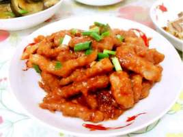
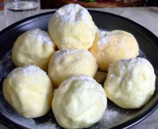
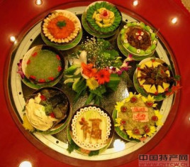

溜肉段：溜肉段，是东北地区的传统名菜，具有外酥里嫩，味香可口的特点。成品外酥里嫩、咸香可口，百姓饭桌上的家常菜。由溜肉段衍生出的锅包肉更是东北菜中的经典。
雪衣豆沙：雪衣豆沙属于吉菜（东北菜），已有百年历史，颇受游客欢迎。主要原料是红豆、鸡蛋、白糖等。形状园团，色泽洁白、吃前撒上白糖，故得此称。此菜香甜可口、独具风味。
满族八大碗：《满族旗人祭礼考》记载：宴会则用五鼎、八盏，俗称八大碗，年、节、庆典、迎、送、嫁娶富家多以八大碗宴请，八大碗在当时集中了扒、焖、酱、烧、炖、炒、蒸、熘等所有的烹饪手法。